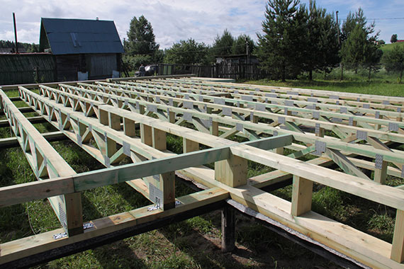

Фермы крыши
Устойчивость и прочность крыши целиком зависит от её несущей конструкции – стропильной системы, которая предназначена для распределения нагрузки от кровли, осадков и ветра на несущие стены, поэтому её рассчитывают на вышеуказанные нагрузки для данной местности согласно СНиП. Очень важно, чтобы расчет, производство и монтаж конструкций были выполнены правильно.
Стропильные конструкции изготовляют из дерева, металла или железобетона. Для каркасных домов используют лёгкие деревянные конструкции.
Высокое качество стропильной системы (ферм крыши) достигается путём изготовления на современном оборудовании из древесины хвойных пород оптимальной влажности 18 ± 2% не ниже первого сорта с обработкой огнебиозащитой.
Фермы крыши собирают в цехах из напиленных из бруса деталей и металлозубчатых пластин с помощью пресса, а на строительную площадку доставляются в собранном виде, в связи с чем, монтаж конструкции не занимает много времени.
Крыши делятся на плоские и скатные, а скатные на односкатные, двухскатные, сводчатые, вальмовые, шатровые, купольные и другие.
Увеличить площадь и полезное пространство в доме можно за счет мансарды, то есть за счёт дополнительного этажа в чердачном пространстве образованного стропильной конструкцией.
Благодаря компьютерному программному обеспечению MiTek воз-можно рассчитать и спроектировать стропильную конструкцию дома любой сложности.
При строительстве каркасных домов особое внимание уделяется мон-тажу стропил, ведь от правильности сборки зависит безопасность будущих жильцов дома. Деревянные фермы можно "подогнать" по месту, то есть укоротить, выпилить, нарастить, что иногда приходится делать из-за ошибок при возведении кирпичных стен сторонними организациями. Проделать подобные действия с металлическими стропилами довольно трудно, а с железобетонными конструкциями – невозможно.
Двускатные фермы
- Самые экономичные кровельные конструкции
- Стандартный пролет 8 – 30 м, склон 10 – 65°
- Шаг ферм 0,6– 1,4 м
Мансардные фермы
- Самые экономичные кровельные конструкции
- Стандартный пролет 8 – 30 м, склон 10 – 65°
- Шаг ферм 0,6– 1,4 м

Нестандартные конструкции
- Создание нетипичных форм кровли
- Спортивные залы (напр. теннисный)
- Реконструкция исторических объектов

Односкатные фермы
- Для пристроек, конструкций пилообразных крыш, конических (веерообразных) крыш и т.д.
- Стандартный пролет 8 – 15 м, склон 6 – 45°
- Шаг ферм 0,6– 1,4 м

Фермы с параллельными поясами или балки перекрытия
Деревянные балки перекрытия востребованы в малоэтажном строительстве, а также применяются при строительстве промышленных объектов, возведении несущих конструкций здания, в том числе и для перекрытия крыши в качестве стропильной конструкции.
Высокое качество балок перекрытия достигается путём их изготовле-ния на современном оборудовании из древесины хвойных пород оптимальной влажности 18 ± 2% не ниже первого сорта с обработкой огнебиозащитой.
Все проектные работы и расчёты осуществляются при помощи компьютерного программного обеспечения MiTek, поэтому балки перекрытия точно соответствуют предъявляемым заказчиком требованиям.
Балки перекрытия собираются на прессе с использованием металлических зубчатых пластин (МЗП).
Преимущества балок перекрытия:
- Прочность и высокая несущая способность
- прочность балок перекрытия достигается за счёт внутренних диагоналей. Данная конструкция отлично работает на растяжение-сжатие, тем самым обладает высокой несущей способностью;
- Возможность перекрытия больших пролетов
- балки перекрытия целесообразно использовать при пролётах 4 и более метров;
- Простота монтажа коммуникаций в пространстве между диагоналями
- к уложенным внутри балок перекрытия коммуникациям имеется лёг-кий доступ без проведения капитальных ремонтно-строительных работ;
- Возможность монтажа конструкций без применения дорогой строительной техники
- балки перекрытия имеют малый вес, что позволяет осуществлять монтаж силами монтажников вручную;
- Простота и быстрота монтажа. Нет потребности в высокой квалификации работников
- балки перекрытия не требуют дополнительных запилов и подгонок, требуется лишь расставить их с определённым шагом, согласно инструк-ции, и закрепить;
- Идеально-ровные поверхности для потолка и пола
- Нет деформации и вибрации

Промышленные объекты, сельскохозяйственные и спортивные комплексы

Семейные дома
- Легкие фермы, мансарды
- Стандартный пролет 6 – 12 м, склон 15 – 50°
- Шаг ферм 0,6 - 1м
- Возможна комбинация с бетонным полом
Надстройки многоквартирных домов
- Преимуществом является низкий вес надстройки и минимальные горизонтальные силы в опорах
- Возможно сохранить существующую конструкцию плоской крыши для защиты постройки от воды во время монтажа
- Легкий и быстрый монтаж